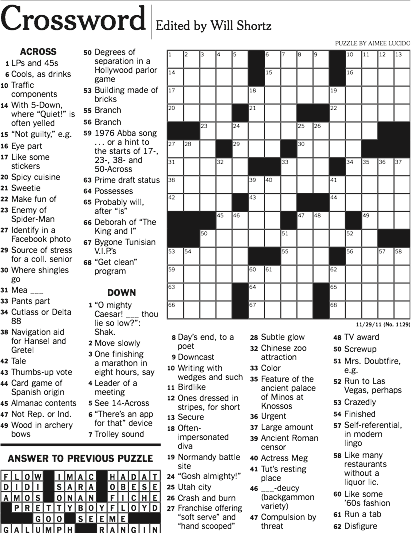

Week 14: Connections
Two very different classes this week, held together by a single theme: connections. On Tuesday we built a social network from a novel — a graph where characters are vertices and shared paragraphs are edges. On Thursday we zoomed out and asked the bigger question: why does following your curiosity across completely unrelated domains keep paying off? Both days were about discovering that things you thought had nothing to do with each other turn out to be deeply, strongly connected.
Your (Completed!) Toolkit
- Representation — how we encode meaning
- Collections — how we group things
- Control flow — how we make decisions and repeat
- Functions — how we name and reuse logic
- Abstraction — how we hide complexity
- Efficiency — how we measure cost
This week: Social Networks + NLP pipelines + Acquired Diversity — the whole term in one week!
Tuesday: Inferring a Social Network from a Novel
From Text to Graph
Last week we learned that spaCy can find character names in a text. This week we asked the natural follow-up: if two characters appear in the same paragraph, they probably know each other — or at least interact. Do that for every paragraph in a whole novel, count how often each pair appears together, and you have the ingredients for a social network.
The goal: a graph like this, automatically inferred from the text.
- Vertices: characters (people recognized by spaCy NER)
- Edges: pairs of characters who appear together in at least n paragraphs
- Edge weight: how many paragraphs they share — a proxy for relationship strength

The research behind this idea is real — the paper below (Elson, Dames & McKeown, ACL 2010) analyzed social networks in 19th-century fiction and found that dialogue proximity predicts character relationships:

The Pipeline: Four Functions to Implement
The full pipeline had six stages, but only the first four needed your code. The last two (buildGraph, drawGraph) were provided.
loadText → getParagraphs → getParaPeople → countPairs → buildGraph → drawGraph- Load the raw novel text from a
.txtfile - Split into paragraphs — blank lines separate them
- Find the people in each paragraph using spaCy NER
- Count co-occurrences — how many paragraphs does each pair share?
- Build the graph — keep only pairs above a threshold
- Draw and export — visualize the network, save as JSON for D3
Step 1: getParagraphs
Paragraphs in plain-text files are separated by blank lines — which in Python look like "\n\n".
getParagraphs
def getParagraphs(text: str) -> list:
"""Split text into non-empty paragraphs (blocks separated by blank lines)."""
return [p.strip() for p in text.split("\n\n") if p.strip()]Split on double-newline, strip whitespace from each chunk, discard any empty results. Three lines of text separated by blank lines → ["First paragraph", "Second paragraph", "Third paragraph"].
Step 2: getPeople
Given a single paragraph string, return all the person names spaCy finds in it.
getPeople
def getPeople(text: str) -> list:
"""Return a list of PERSON names found in a single string of text."""
doc = nlp(text)
return [ent.text for ent in doc.ents if ent.label_ == "PERSON"]Run the string through the NLP pipeline, filter entities to just "PERSON", collect their text. For “Anne ran to meet Diana at the gate.” this returns ['Anne', 'Diana'].
Step 3: getParaPeople
Apply getPeople to every paragraph — one line of code using a list comprehension.
getParaPeople
def getParaPeople(paragraphs: list) -> list:
"""Apply getPeople to every paragraph; return a list-of-lists."""
return [getPeople(p) for p in paragraphs]Input: ["Anne ran to meet Diana.", "The sky was blue."] Output: [['Anne', 'Diana'], []]
The empty list for the second paragraph is correct — no people mentioned there.
Step 4: countPairs
This is the most interesting function. Given the list of lists, count how many paragraphs each pair of characters shares.
countPairs
def countPairs(paraPeople: list) -> dict:
"""Count co-occurrences of name pairs across paragraphs."""
pairCounts = defaultdict(int)
for people in paraPeople:
unique = sorted(set(people)) # deduplicate + sort → canonical order
for i, s in enumerate(unique):
for t in unique[i + 1:]: # only pairs (i,j) with j > i → no duplicates
pairCounts[(s, t)] += 1
return pairCountsWhy sorted(set(...))?
set()removes duplicates: if “Anne” is mentioned three times in one paragraph, she still counts once for pairing purposessorted()gives canonical alphabetical order: the pair is always("Anne", "Diana"), never sometimes("Diana", "Anne")— so both appearances tally to the same key
Why only unique[i+1:]? If we looped over all pairs, we’d count (Anne, Diana) and (Diana, Anne) as separate keys — double-counting. By only looking at people who come after s in the sorted list, each pair is counted exactly once.
For [["Alice", "Bob"], ["Alice", "Bob", "Carol"]]: → {("Alice", "Bob"): 2, ("Alice", "Carol"): 1, ("Bob", "Carol"): 1}
Steps 5–6: buildGraph and drawGraph (provided)
buildGraph filters the pair counts by a threshold (default: 5) and builds a NetworkX graph. Edge weight = co-occurrence count.
def buildGraph(pairCounts: dict, threshold: int = 5) -> nx.Graph:
G = nx.Graph()
for (u, v), w in pairCounts.items():
if w > threshold:
G.add_edge(u, v, weight=w)
return GdrawGraph uses NetworkX’s spring layout to position nodes, scaling node size by degree (highly connected characters are bigger) and edge width by weight (frequently co-occurring pairs have thicker lines):
node_sizes = [300 + degrees[n] * 80 for n in G.nodes()]
edge_widths = [1.0 + 3.0 * (w / max_w) for w in edge_weights]The threshold matters a lot: set it too low and the graph is a hairball; set it too high and you lose minor characters. Try different values and see what you find!
The Full Pipeline in Action
text = loadText("anne.txt") # try emma.txt or attwn.txt too!
paragraphs = getParagraphs(text)
paraPeople = getParaPeople(paragraphs)
pairCounts = countPairs(paraPeople)
G = buildGraph(pairCounts, threshold=5)
drawGraph(G)
exportGraph(G)Run it on Anne of Green Gables, Emma, or At the World’s End and you get a different social universe every time. The protagonist always sits at the center; supporting characters cluster around them; isolated characters who rarely interact with anyone appear on the periphery.
spaCy’s en_core_web_sm model is trained on news text, not 19th-century novels. It will occasionally miss character names (especially unusual ones) or misclassify place names as people. Real literary NLP research uses custom-trained models or dictionary lookups from the book’s dramatis personae. For our purposes, it works surprisingly well — but don’t be alarmed if a character or two is missing.
Thursday: Strongly Connected Components
A Story About Following Curiosity
Thursday was the last lecture of the term, and it was a little different. Instead of new technical content, it was a story about how following your interests across seemingly unrelated domains keeps paying off in unexpected ways. The technical concept at the heart of it — strong connectivity — turned out to be a perfect metaphor for what we were describing.
It Started With National Parks


The starting point: photographs from national parks, a desire to turn them into something that looks like stained glass — algorithmically. Not painting by hand. Coding it.
Voronoi Wasn’t Quite Right
We already know Voronoi diagrams. The idea was to use Voronoi regions as the “panes” of the stained glass. Here’s how that went:


The problem: Voronoi cells are seeded randomly, so they cut right across color boundaries rather than following them. What we really want is regions that are equal sized, continuous, compact, and honor image boundaries.
Pointillism as a Stepping Stone


Voronoi does work beautifully as pointillism — using the centroid color of each region as a single dot. But for stained glass, we need the regions to hug the color boundaries. Time to ask for help.
Phone a Friend → Superpixels

“What you need are superpixels!”
Superpixels are an image-processing technique: groups of pixels clustered together into equal-sized, continuous, compact regions that honor color boundaries. The SLIC algorithm (Simple Linear Iterative Clustering) runs k-means in 5D space — (x, y, r, g, b) — so it naturally groups spatially close, similar-colored pixels together.

Equal sized. Continuous. Compact. Honoring boundaries. Exactly what stained glass needs. And Python’s skimage library has SLIC built right in.
Then Came the Second Question
“How will you know if you’ve done a good job?”
This question opened a completely unexpected rabbit hole. What does it mean for a partition of an image into regions to be good? This led directly to… gerrymandering.
The Gerrymandering Detour
Gerrymandering is the drawing of political district boundaries to give one party an unfair advantage. The connection to superpixels: both problems are about dividing a 2D space into regions, and in both cases you want regions that are equal sized, continuous, and compact.

Gerrymandered ✗ — districts are not compact

Compact ✓ — districts follow natural geography
Canada solved this problem in 1964 by requiring each province to form an independent panel to draw boundaries — no politicians involved. The result: much more compact, geographically sensible districts.

In 1964, Canada passed a law requiring each province to form an independent panel to draw district boundaries.
The lighter, larger regions are a direct result: districts that reflect geography rather than political strategy.
Which is Fair? The Three Scenarios
Take 50 people, 60% blue and 40% red, and divide them into 5 districts. Three ways to draw the lines produce very different outcomes:


The same 50 people, with the same party affiliations, produce completely different election results depending on where the lines are drawn. This is gerrymandering: using geometry as a political weapon.
The Efficiency Gap: A Metric for Fairness
Can we quantify how gerrymandered a map is? Yes — with wasted votes:
- Any vote above 50% for the district winner is wasted (the winner didn’t need them)
- Any vote for the loser is wasted (they didn’t count toward anything)
- For each district: count votes above 50% for the winner + all votes for the loser
- Sum wasted votes by party across all districts
- Efficiency gap = |Party A wasted − Party B wasted| / total votes cast
A perfectly fair map has gap ≈ 0. A gerrymandered map has a large gap — one party systematically wastes far more votes than the other.
We want to minimize the gap!
This concept was formalized in a peer-reviewed paper and has been cited in actual court cases challenging gerrymandered maps:

The Rabbit Hole Closes… and Opens Again
Here’s where it gets delightful. The efficiency gap was developed to measure fairness in political districting. But the idea — counting “misclassified” items and penalizing the algorithm for it — applies directly to pixel clustering.
Wasted votes = pixels assigned to the wrong superpixel region.
The efficiency gap formula, slightly reinterpreted, becomes a cost function for evaluating how well a superpixel algorithm honored the color boundaries of the original image. The political science problem illuminated the computer vision problem, and vice versa.
The rabbit hole questions:
- What would Nate Silver do with the gap?
- What happens in the limit?
- What happens in a multi-party system?
- Is there a maximum-likelihood estimator for the gap?
- Can I apply this within a clustering algorithm on pixels?
Strong Connectivity

→
←

A Tiffany stained glass tree and the Canadian Charter of Rights and Freedoms. Two things that have nothing to do with each other — except that the quest for one led directly to a deeper understanding of the other.
The arrows go both ways. The stained glass ambition raised the question of how to evaluate clustering quality, which led to gerrymandering, which led to the efficiency gap, which fed back as a new tool for the original image segmentation problem.
That bidirectional influence — where learning flows in both directions — is what graph theorists call strong connectivity. Two vertices are strongly connected if you can get from each one to the other. In the graph of ideas, stained glass and electoral fairness are now in the same strongly connected component.
A Diversity Diversion
- Speed: Cognitively diverse teams solve problems up to 3× faster and consider 48% more solutions (HBR/Scientific American)
- Accuracy: Groups with diverse members are more likely to correct errors and avoid groupthink (NeuroLeadership Institute)
- Innovation: Cognitive diversity can improve team innovation by 20% (Journal of Applied Psychology)
Most of this research focuses on inherent diversity — characteristics we’re born with or into. But this talk was about something different.
Acquired diversity is the breadth of your interests, experiences, and connections. Travel. Books and games. Music. Art. Food. Coding for fun. Building something. Planting a garden.
The connections between stained glass, Voronoi diagrams, image clustering, and electoral fairness didn’t come from a plan. They came from following curiosity — from having enough acquired diversity that when a new problem appeared, the old one lit up in recognition.

“We cannot predict which connections will be important — so build as many as you can. Do things for beauty, for fun, or because you are afraid of them.”
Your Joyful Interests Are Not a Distraction
Here is something worth holding onto as you move through your career:
The things you love for their own sake — the chess, the crosswords, the cycling, the music, the Taylor Swift deep dives, whatever it is for you — are not in competition with your professional skills. They are the source of them.


The story of stained glass → superpixels → gerrymandering → efficiency gap → better clustering is not unusual. It is the normal way that breakthroughs happen. Someone who loves two things finds that one explains the other. Someone bored at a concert has an algorithm idea. Someone gardening realizes the solution to a data structure problem they’d been stuck on for weeks.
You are not wasting time when you pursue things that delight you. You are building the cross-domain vocabulary that will make you unexpectedly, disproportionately good at your required tasks. The chess player sees search trees differently. The musician hears rhythm in loops. The crossword solver is comfortable with constraint satisfaction. The cyclist knows what it feels like to optimize over a long, bumpy route.
Expertise in one domain gives you metaphors, intuitions, and tools that transfer to other domains in ways you cannot predict in advance. The only way to have those cross-domain tools when you need them is to acquire them before you need them — which means following your interests now, without justification, and trusting that the connections will emerge.
Your curiosity is not frivolous. It is your competitive advantage.
Do things for beauty, for fun, or because you are afraid of them. We cannot predict which connections will be important — so build as many as you can.
The Full Course Arc
| Week | Topic |
|---|---|
| 1 | Algorithms and efficiency |
| 2 | Representation, lists, strings |
| 3 | Classes, friendship graphs |
| 4 | Bracelets, loops, recursion |
| 5 | Pandas, data analysis |
| 6 | Dictionaries |
| 7 | Reading week |
| Week | Topic |
|---|---|
| 8 | Graphs, BFS, DFS |
| 9 | Voronoi, weighted graphs |
| 10 | Sudoku, constraint solving |
| 11 | Maps, Dijkstra’s algorithm |
| 12 | TSP, permutations |
| 13 | Text as data, NLP, NER |
| 14 | Social networks, SCC |
From counting bracelet patterns to inferring social networks from Victorian novels — it’s been quite a journey. The toolkit you’ve built is real, and it will keep paying off in ways you can’t predict yet.